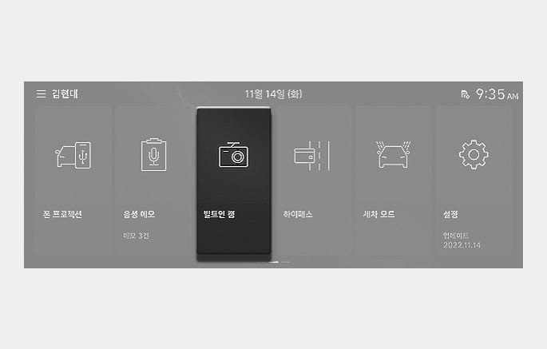
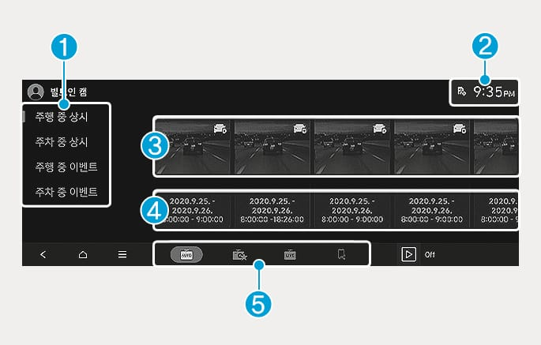
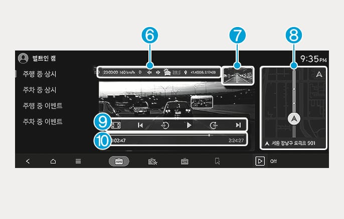

빌트인 캠 영상 확인하기

2C_BuiltInCamHome
녹화된 빌트인 캠 영상을 확인하려면 인포테인먼트 시스템 홈 화면에서 빌트인 캠을 선택하십시오.
-
빌트인 캠 메뉴 사용 중에는 녹화 기능이 작동하지 않습니다.
-
빌트인 캠 메뉴를 선택하면 녹화를 중단하고 영상 파일을 표시하기 위한 준비 시간이 필요합니다. 빌트인 캠 연결이 원활하지 않은 경우 잠시 후 다시 시도해 주십시오.

2C_BuiltInCamMenu
-
녹화 영상 선택 메뉴
-
자동 녹화 영상: 주행 중 상시, 주차 중 상시, 주행 중 이벤트, 주차 중 이벤트
-
수동 녹화 영상: 수동 녹화, 타임랩스, 보관함
-
-
시스템 상태 표시
표시 상태
설명
Ļ 켜짐
시스템 고장
ļ 깜빡임(1초 주기)
수동 녹화/충격 감지 이벤트 녹화 중
ļ 깜빡임(2초 주기)
타임랩스 녹화 중
Ľ 켜짐
SD 메모리 미삽입 또는 메모리 고장
ľ 켜짐
빌트인 캠이 스마트폰에 연결됨(Wi-Fi)
-
녹화 영상 썸네일
-
주행 중 상시: 주행 중 녹화 영상을 묶음으로 표시
-
주차 중 상시: 주차 중 녹화 영상을 묶음으로 표시
-
-
영상 녹화 일시
-
메뉴 구성: 자동 녹화 영상, 수동 녹화 영상, 실시간 카메라 영상, 스마트폰 연결

2C_BuiltInCamMenu_2
-
기록된 주행 정보
-
시간, 속도, 기어, 방향지시등, 충격 감지 정도, GPS 위치
-
-
전방/후방 영상 선택
-
지도상 녹화 위치
-
지도를 터치해 위치 이동
-
-
전체 화면 적용/취소, 재생 제어
-
재생바
-
재생 시간 및 위치 확인
-
터치하면 위치 이동
-